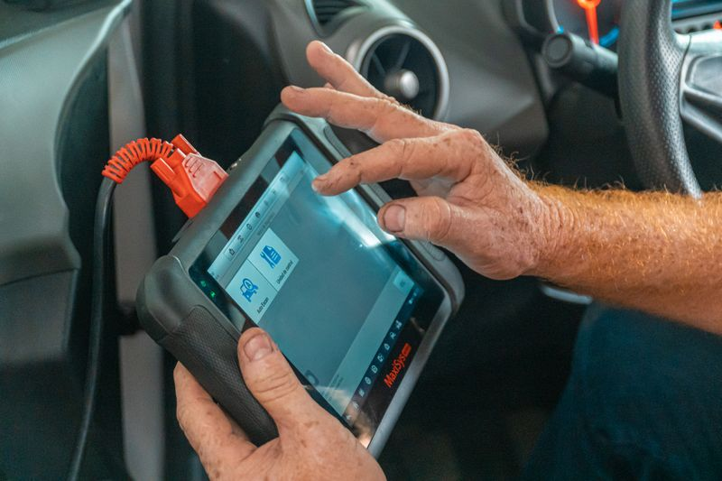
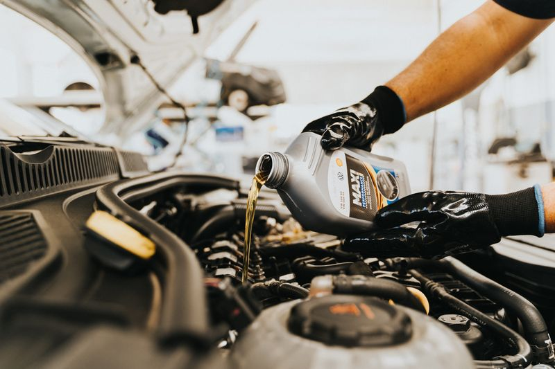
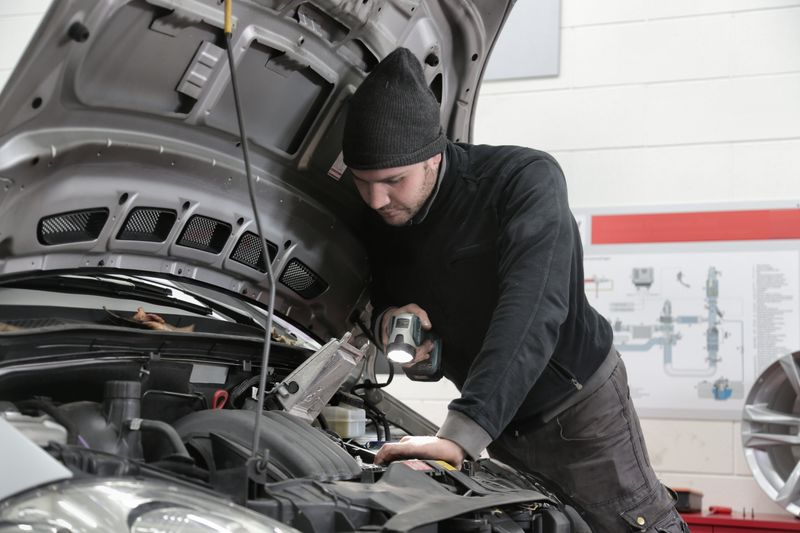
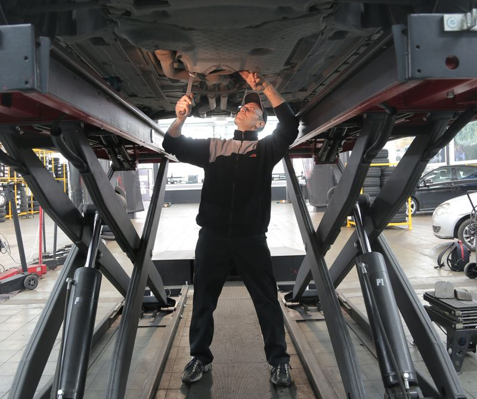
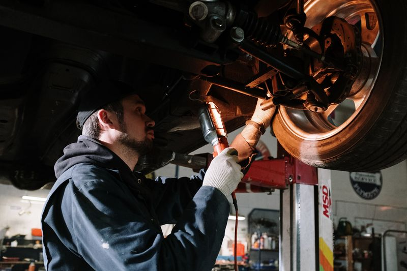
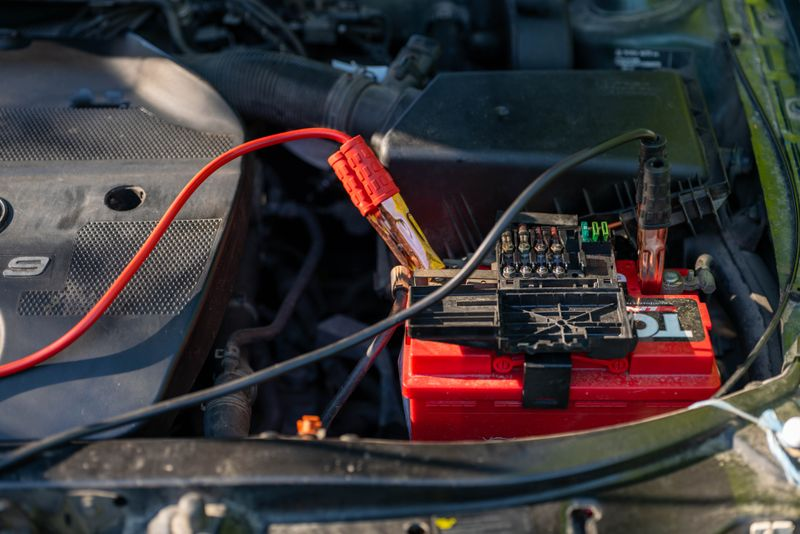

01Диагностика
Компьютерная диагностика и проверка электронных систем автомобиля.
СПЕЦИАЛИЗИРОВАННЫЙ СЕРВИС MERCEDES-BENZ
Обслуживание и ремонт Mercedes-Benz в Сочи.
От диагностики до сложного ремонта двигателя.
01 / УСЛУГИ
Диагностика, плановое обслуживание
и ремонт основных систем автомобиля.

01Компьютерная диагностика и проверка электронных систем автомобиля.

02Замена масла и расходных материалов. Аппаратная замена масла.

03Ремонт бензиновых и дизельных двигателей, ремонт турбин.

04Ремонт автоматических и механических коробок передач.

05Ремонт ходовой части, пневмоподвески, стоек и рулевых реек.

06Ремонт стартеров, генераторов и автооптики. Обслуживание климатических систем.
Нужно обсудить конкретную неисправность?
Поговорить со специалистом ↗02 / УСЛУГИ И ЦЕНЫ
Основные работы и начальные цены.
Выберите нужную категорию.
| Услуга | Стоимость |
|---|---|
| Компьютерная диагностика | от 1 000 ₽ |
| Замена масла ДВС | от 1 000 ₽ |
| Замена масла АКПП | от 5 000 ₽ |
| Замена тормозной жидкости | от 1 000 ₽ |
| Замена охлаждающей жидкости | от 1 000 ₽ |
| Замена масла ГУР | от 3 000 ₽ |
| Замена масла в редукторе | от 1 000 ₽ |
| Замена масла в раздатке | от 3 000 ₽ |
| Замена тормозных дисков | от 2 000 ₽ |
| Замена тормозных колодок | от 1 000 ₽ |
| Услуга | Стоимость |
|---|---|
| Сварка | от 500 ₽ |
| Замена рычагов | от 1 000 ₽ |
| Замена ступицы | от 1 000 ₽ |
| Замена привода | от 3 000 ₽ |
| Замена кулаков | от 4 000 ₽ |
| Замена подрамника | от 8 000 ₽ |
| Замена амортизаторов | от 2 000 ₽ |
| Замена эластичной муфты | от 3 000 ₽ |
| Ремонт карданных валов | от 5 000 ₽ |
| Замена пружин подвески | от 1 000 ₽ |
| Обслуживание и ремонт тормозных суппортов | от 4 000 ₽ |
| Ремонт рулевых реек | от 6 000 ₽ |
| Услуга | Стоимость |
|---|---|
| Замена уплотнителей и прокладок | от 3 000 ₽ |
| Замена теплообменника | от 3 000 ₽ |
| Замена прокладки поддона | от 5 000 ₽ |
| Диагностика двигателя | от 1 000 ₽ |
| Эндоскопия двигателя | от 2 000 ₽ |
| Осциллография двигателя | от 5 000 ₽ |
| Услуга | Стоимость |
|---|---|
| Замена поддона | от 2 000 ₽ |
| Замена гидроблока | от 5 000 ₽ |
| Замена платы | от 5 000 ₽ |
| Замена электрических разъёмов | от 2 000 ₽ |
| Диагностика АКПП | от 2 000 ₽ |
| Услуга | Стоимость |
|---|---|
| Заправка кондиционера | от 4 000 ₽ |
| Поиск пропусков | от 1 000 ₽ |
| Замена компрессора кондиционера | от 3 000 ₽ |
| Замена радиатора отопителя | от 6 000 ₽ |
| Диагностика климатической системы | от 3 000 ₽ |
| Замена радиатора кондиционера в салоне | от 8 000 ₽ |
| Услуга | Стоимость |
|---|---|
| Снятие и установка торпеды | от 50 000 ₽ |
| Ремонт электропроводки | от 1 000 ₽ |
Указаны начальные цены. Итоговая стоимость зависит от модели автомобиля и объёма работ — уточните её при записи.
03 / О СЕРВИСЕ
«Мерседес AMG» — сервисный центр в Сочи, специализирующийся на автомобилях Mercedes-Benz.
Занимаемся ремонтом любой сложности: от электронных систем и ходовой части до двигателя и трансмиссии.
04 / ОТЗЫВЫ
Настоящие отзывы о работе сервиса, опубликованные целиком. Источник каждого отзыва указан на карточке.
«Работают быстро, качественно, цена разумная. В отличие от официалов, диагностику делают бесплатно.»
«Отличный сервис , толковые специалисты, Гурген вообще с золотыми руками парень. Все четко быстро и качественно сделали , отполировали . Рекомендую 100 % .»
«Работают профессора, можно доверять»
«Отличный сервис, рекомендую всем !»
05 / КОНТАКТЫ
Позвоните или напишите, чтобы обсудить
работы и выбрать время визита.
Сочи, Транспортная улица, 69 к2
Боксы 5–6
Ежедневно
09:00–20:00
06 / КАК НАС НАЙТИ
Транспортная улица, 69 к2
Боксы 5–6 · Ежедневно 09:00–20:00